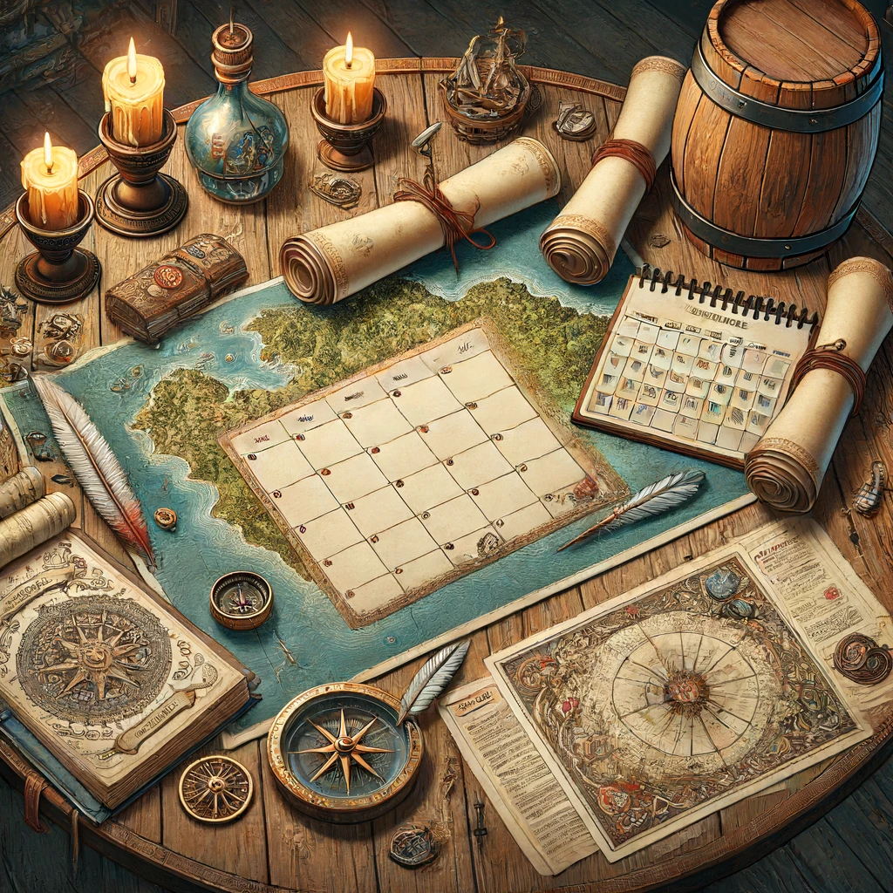

Eventplanung
Organisieren und planen Sie Ihre Spieleabende und Events mühelos
Unsere Eventplanungsfunktion bietet eine einfache und effektive Möglichkeit, Ihre Spieleabende und Events zu organisieren. Egal, ob es sich um regelmäßige Pen-and-Paper-Sitzungen oder große LARP-Events handelt, unsere Tools helfen Ihnen, alle Details im Blick zu behalten und die Planung zu vereinfachen.
- RL-Sitzungsplanung: Planen Sie Ihre regelmäßigen Spieleabende und halten Sie alle Spieler über die Termine informiert.
- Terminfindung: Jeder Spieler kann angeben, wann er in den nächsten Wochen Zeit hat, und die besten Termine werden automatisch ermittelt.
- LARP-Eventplanung: Erstellen und verwalten Sie große LARP-Events mit unserer benutzerfreundlichen Plattform.
- Online-Eventkalender: Schalten Sie Ihre Events online und machen Sie sie für alle Teilnehmer sichtbar.
- Benachrichtigungen und Erinnerungen: Automatische Erinnerungen und Benachrichtigungen sorgen dafür, dass niemand einen wichtigen Termin verpasst.
"Die Eventplanungsfunktion von Tavern hat es uns ermöglicht, unsere Spieleabende und LARP-Events viel effizienter zu organisieren. Es ist ein unverzichtbares Tool für jede Spielgruppe."